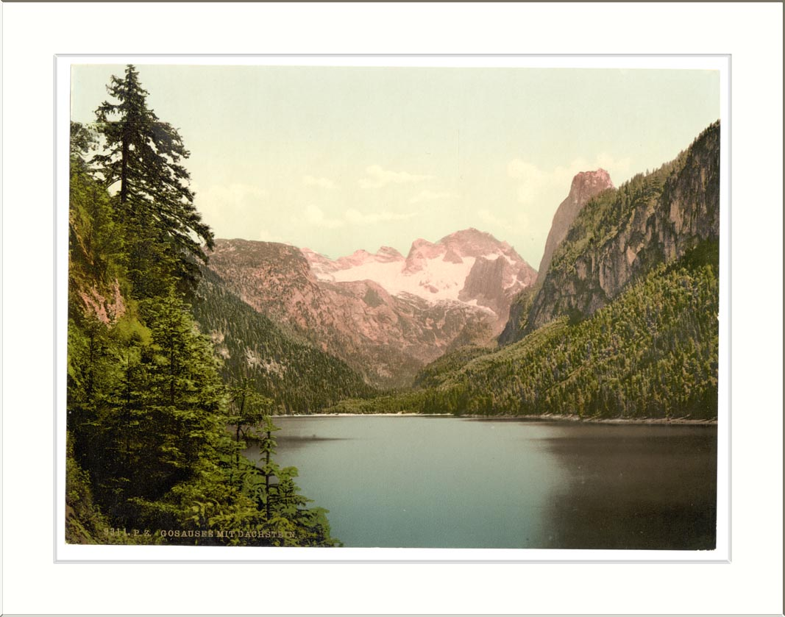
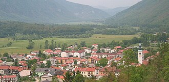
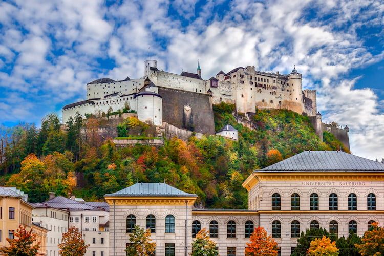
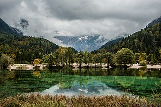
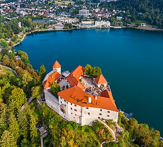
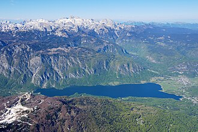

Austria · essential
Gosausee
Walk the flat shoreline early, before the day-trippers and afternoon cloud.
The Alps, threaded east
A 14-day open-jaw route through high lakes, storybook villages, and two distinct sides of the Alps—ending where the water turns impossibly blue.



01 / THE IDEA
Zürich is the soft landing. Western Austria brings the first big alpine reveal. Salzkammergut delivers the lakes. Slovenia gives the trip its wild, turquoise finale.
02 / THE ROUTE
Best scenery-to-logistics ratio · one airport buffer night
Swipe the route
03 / ON THE MAP
The full route moves east and south: urban reset, western peaks, Austrian lake country, then the Julian Alps. The only deliberate pause is the Venice airport night before the flight home.
04 / DON'T MISS
Six stops, each with a different kind of alpine payoff.
Walk the flat shoreline early, before the day-trippers and afternoon cloud.
Treat it as a beautiful morning, not an all-day base.

Old-town lanes, fortress views, and a civilized pause between lake days.

A low-effort picnic-and-paddle reset beneath serious peaks.
Drive the pass one way, follow the river south, and let the color change the mood of the trip.

See the icon, then spend the slower day at the quieter lake.
05 / THE EXIT
The airport decision should follow the route—not bend the route back on itself.
VCE
Best for the full Slovenia version. Sleep by the airport and keep the final morning calm.
LJU
The easy-ground option if a one-stop fare beats Venice enough to matter.
MUC
The practical finish if you stop in Salzburg and skip the Slovenia chapter.
Flight schedules and rental-car cross-border fees change. Re-check the exact Aug 31–Sep 13, 2026 pattern before booking; the route recommendation is about geography first.
06 / RYAN SHIRLEY CUT
These chapters supplied the visual short list; the actual sequence is rebuilt for a comfortable eastbound road trip.

07 / MY CALL
Austria is the heart of the trip. Slovenia is what makes it memorable.
Keep Zürich short. One recovery night is enough before the landscapes take over.
Give Salzkammergut four nights. It is the densest concentration of the trip’s best lake days.
Protect the final night. Stay at Venice airport instead of gambling on a border-crossing flight morning.